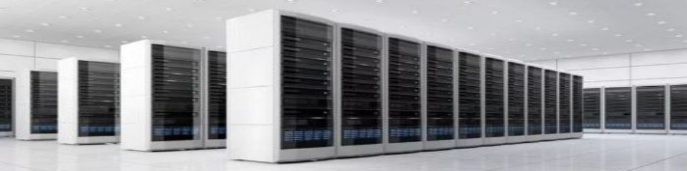
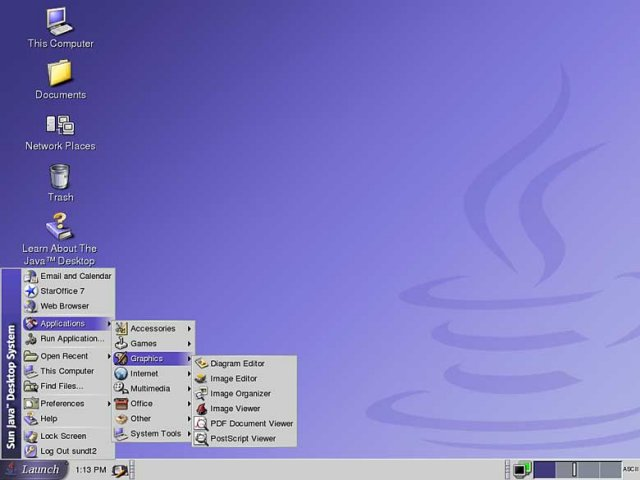
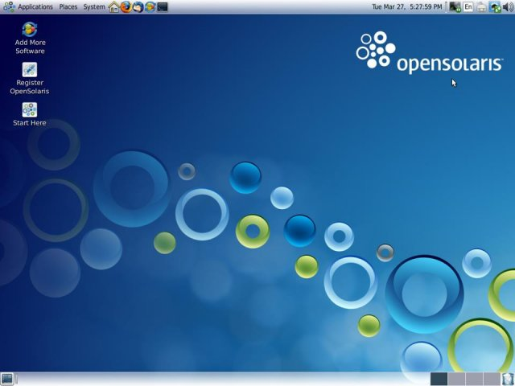
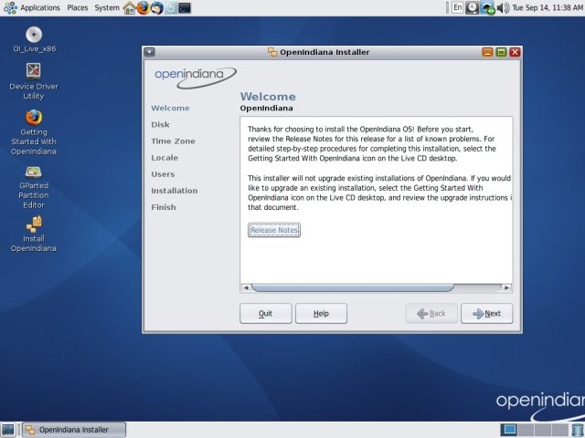
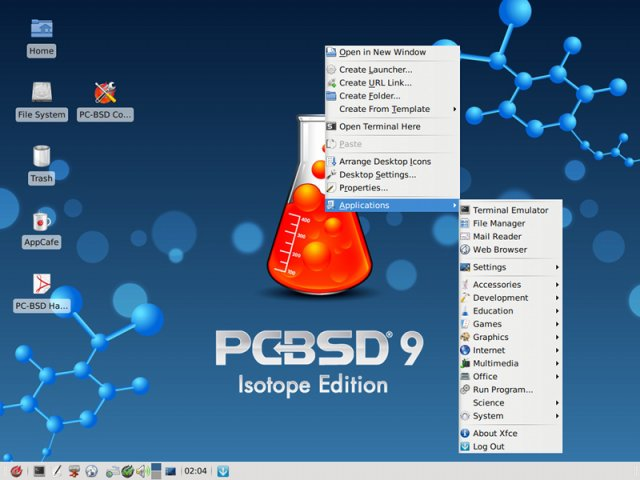

Worthington's Workshop
Computers - The Unix Operating System
|
|
My introduction to Unix was several years behind regular Linux usage, when I came across the July 2005 issue of Australian Personal Computer. The front cover disk contained an installation for Solaris 10, the now open source Unix OS offered by Sun Microsystems. The actual installation involved five disks, being four for the OS and one for utilities. I scavenged a spare Pentium 4 PC and installed it in wonderment that I had acquired a professional 'Big Iron' computing system as used by universities, government departments and research facilities. Unix is a multitasking, multi-user computer operating system. It was originally developed at AT&T's Bell Labs by a team including Ken Thompson and Dennis Ritchie. Unix systems have a modular design using simple tools to perform a limited, well-defined function. It uses shell scripting and a command language to combine the tools to perform complex tasks. Dennis Ritchie created the C systems programming language which enabled portability of Unix across many platforms. Unix is used in servers, workstations, and mobile devices. The Unix environment and the client-server program enabled development of the Internet and networked computers. Unix portability to more machines than other OSs led to open systems. The OS consists of many utilities under control of the kernel. The kernel starts and stops programs, handles filing and other common "low level" tasks common to programs and schedules access to the CPU via time slicing. About Unix: Unix on Wikipedia The Unix System: www.Unix.org The Creation of Unix: Bell Labs History Book on Unix: The Unix Programming Environment, Prentice Hall, Kernighan & Pike Book on C: The C Programming Language, Prentice Hall, Kernighan & Ritchie In 1987 AT&T and Sun merged BSD, System V and Xenix into Unix System V Release 4 (SVR4). In 1993 Sun replaced SunOS 4, derived from BSD, with Solaris 2 based on SVR4. Solaris is known for its scalability (the ability to accomodate expanding amounts of workload) and for originating innovative features such as DTrace, ZFS and Time Slider. In 2010 Oracle Corporation acquired Sun Microsystems and renamed it to Oracle Solaris. During Sun Microsystems time of development of Solaris from 2005-2010, Solaris 10 was released under the Common Development and Distribution License (CDDL) via the OpenSolaris project. When Oracle bought Sun Microsystems they cancelled development of OpenSolaris so that Solaris 10 was restrictively relicenced to limit the use as a closed source proprietory OS. Oracle allowed free downloads for a 90 day trial period and then required a support contract to continue. In 2011 a new license allowed a free download of Solaris 10 and 11 without a support contract, but the user is limited to use as a development platform and no commercial or production use. Oracle are now vague about home or hobby usage rights. I found severe limitations with the currency of the release dates for the supporting software. The Linux systems I was using at the time were at least a year ahead in updates. After looking at the Oracle download site restrictions, I gave up on acquiring Solaris 11 and investigated OpenSolaris. About Solaris: Solaris on Wikipedia Download Solaris 10 from Oracle: Oracle Solaris 10 Download Solaris 11 from Linux Freedom: Oracle Solaris 11  Solaris 10 Unix using Java desktop In 2004 Sun Microsystems created OpenSolaris based on Solaris, with an open source user community. It derives from the 1980's UNIX System V Release 4 (SVR4) and is the only open source version of the System V. OpenSolaris combined several succeeding open source software systems. In 2005 most of the system code was released. Some system code was still proprietory, only available as pre-compiled binary files. In 2008 OpenSolaris 2008.05 was released as a Live or Install CD using a Gnome 2 desktop. OpenSolaris 2008.11 included a GUI for ZFS' Time Slider snapshot facility, similar to Mac OS X's Time Machine. In 2009 OpenSolaris 2009.06 was released with support for the SPARC platform. In 2010 Oracle announced that Solaris Express program would be closed, which prevented OpenSolaris 2010.03 from release. In 2010 the project was restructured due to the availability of source code from Oracle. In 2010 a final build of OpenSolaris was released by Oracle to enable an upgrade to Solaris 11 Express. Oracle Solaris 11 Express 2010.11, a preview of Solaris 11 and the first release of the post-OpenSolaris distribution from Oracle, was released in 2010. Again, I found limitations with the currency of the release dates for the supporting software. By this time I had discovered the migration of software development to Open Indiana. About OpenSolaris: OpenSolaris on Wikipedia Download OpenSolaris 2009-06 from Tucows: OpenSolaris 0906 Download OpenSolaris 2009-06 from Linux Freedom: OpenSolaris 0906 Book on OpenSolaris: The OpenSolaris Bible, Wiley, Solter Jelinek & Miner  OpenSolaris Unix using Gnome 2 desktop When Oracle converted the OS to a closed source system, several former developers formed the Illumos project and forked the core software as the OpenIndiana project to continue development of the software. OpenIndiana was launched in late 2010 and remains free and open-source. While OpenIndiana is technically a fork, it follows OpenSolaris ideals and is binary-compatible with the Oracle Solaris 11 and Express. It changed to an Illumos kernel rather than the original OS/Net of OpenSolaris, but still keeps the IPS package management system. The first release based on Illumos (151) was released on September 2011. I installed the current version 151a8. I found the system had a Gnome 2 desktop and appeared to be quite stable running on a 2.4GHz Pentium IV with 4GB memory. The software repository has a reasonable assortment of software, but were still not up to the cutting edge of Ubuntu Linux. For example, the Office Suite is Open Office, rather than the later Libre Office. I was able to successfully download and install .deb packages to enhance the system. One program I got working was the Bowers and Wilkins Society of Sound download system which runs under Java. After a years usage I found updating and availability of the software to be limited, and feared the project had stalled, So I next had a look at BSD Unix. About OpenIndiana: OpenIndiana.org Home Page Download OpenIndiana: OpenIndiana.org Download  OpenIndiana Unix using Gnome 2 desktop Berkeley Software Distribution (BSD) was developed at the University of California, Berkeley from 1977 to 1995. BSD can also refer to the many offshots derived from the original. From being part of code in the original AT&T UNIX, it is regarded as a variant of Unix ie: BSD Unix. The software was widely adapted in the 1980's to form the DEC ULTRIX and Sun Microsystems SunOS operating systems, due to the ease of licensing and developer familiarity with the system. Although later superceded in the 1990's by UNIX System V Release 4, BSD derivatives were developed as open source projects including FreeBSD, NetBSD, PC-BSD, OpenBSD and RetroBSD. From these developments have been created Microsofts TCP/IP networking and Apple's OS X. Until version 4.3BSD it included proprietary AT&T Unix code and was subject to an expensive AT&T software license. The networking code was released in 1989 as Networking Release 1 (Net/1) and did not use an AT&T license. More BSD systems were developed without AT&T code using an open licensing system. By 1991 all AT&T code had been removed for Net/2 and created the basis of a freely distributable OS. AT&T's Unix System Labs (USL) had the System V copyright and filed suit against BSD in 1992 questioning the ownership of the source code. The lawsuit slowed development of the free BSD versions for nearly two years, allowing the Linux kernel to get a foothold. 386BSD predated Linux but was not released until 1992. Torvalds said that if 386BSD or the GNU kernel had been available at the time, he probably would not have created Linux. BSD had the lawsuit settled preferentially in its favour in 1994. 4.4BSD was released as 4.4BSD-Lite with no AT&T source code and 4.4BSD Encumbered for AT&T licensees. 4.4BSD-Lite Release 2 was released in 1995 with BSD development at Berkeley ceasing. 4.4BSD-Lite has offspring such as FreeBSD, NetBSD, OpenBSD and DragonFly BSD developed separately due to the permissive licensing system. Other OS's have incorporated BSD code such as Apple OS-X and the original Solaris. I considered installation of either OpenBSD or PC-BSD. I settled on PC-BSD 9.1 Isotope Edition as it seemed a little more professional and had a recommendation in one of the Linux magazines. The interesting thing is that when installed the OS appears as a bare bones system; to obtain utility you are required to install the required software from the system repository - the quaintly named App Cafe. This done, I am quite happy with the system, knowledge of which is useful in the Linux ecosphere. A bit of a learning curve awaits! As a comparison, I still find Linux Ubuntu to be closer to the bleeding edge for the latest software, although Unix has a better Unix File System (UFS) file system. Some versions of Linux can now use UFS. About PC-BSD: PC-BSD.org Home Page Download PC-BSD: PC-BSD.org Download Also have a look at: OpenBSD : About OpenBSD: OpenBSD.org Home Page Download OpenBSD: OpenBSD.org Download FreeBSD : About FreeBSD: FreeBSD.org Home Page Download FreeBSD: FreeBSD.org Download  PC-BSD Unix using KDE desktop |